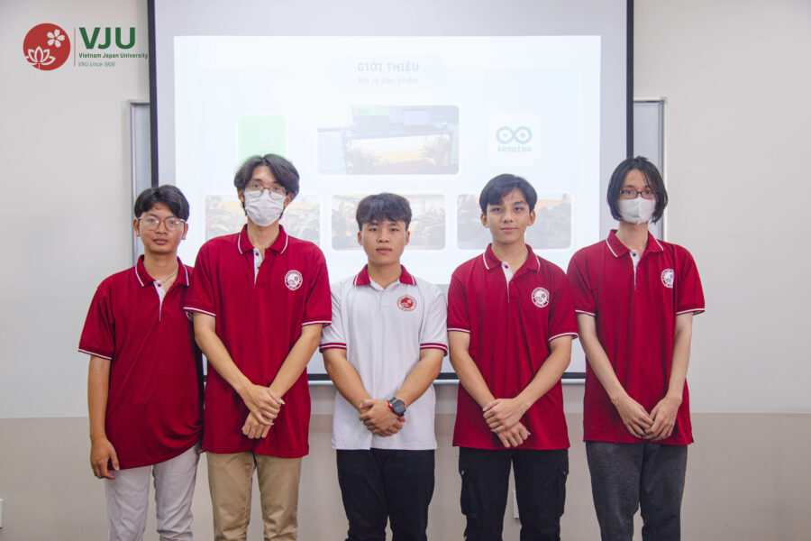

Việt Nam – Nhật Bản
Cùng kiến tạo môi trường học thuật và hợp tác quốc tế.
Tìm hiểu thêm


Trường Đại học Việt Nhật là trường thành viên của Đại học Quốc gia Hà Nội, được thành lập từ ý tưởng hợp tác giáo dục giữa Việt Nam và Nhật Bản.
VJU phát triển theo định hướng đại học nghiên cứu, tập trung vào công nghệ kỹ thuật tiên tiến và khoa học liên ngành nhằm đóng góp cho phát triển bền vững.
Tìm hiểu về VJUMột cộng đồng học thuật đa văn hóa với hoạt động sinh viên, hỗ trợ học tập và trải nghiệm tại khuôn viên VJU.
Khám phá đời sống sinh viên
Các hướng nghiên cứu liên ngành kết nối công nghệ, kỹ thuật và khoa học xã hội.
Không gian thực hành và nghiên cứu phục vụ đào tạo, hợp tác và đổi mới.

Kết nối nhóm nghiên cứu, trường đại học, viện nghiên cứu và doanh nghiệp.

Kết nối với đội ngũ nghiên cứu và chuyên môn của VJU.
VJU phát triển các chương trình đại học, sau đại học và hoạt động học tập thực tế theo định hướng liên ngành.
Xem tất cả chương trìnhTư duy Monozukuri và kỹ thuật cơ điện tử trong sản xuất hiện đại.
Từ tư duy thiết kế đến triển khai công nghệ bán dẫn.
Ứng dụng khoa học và công nghệ vào thực phẩm, dinh dưỡng và sức khỏe.
Đào tạo năng lực thiết kế và vận hành hệ thống điều khiển thông minh.
Tiếp cận liên ngành với các vấn đề phát triển trong bối cảnh toàn cầu.
Nền tảng khoa học máy tính cùng tư duy kỹ thuật và năng lực giải quyết vấn đề.
Đào tạo kỹ sư xây dựng trong môi trường học thuật Việt Nam – Nhật Bản.
Khám phá Nhật Bản qua các góc nhìn xã hội, văn hóa, kinh tế và phát triển.
Kết nối công nghệ, nông nghiệp và mục tiêu phát triển bền vững.
Vì sao chọn VJU: những định hướng làm nên môi trường học tập tại VJU.
Tin tức về đào tạo, nghiên cứu, hợp tác và đời sống tại Trường Đại học Việt Nhật.
Xem tất cả tin